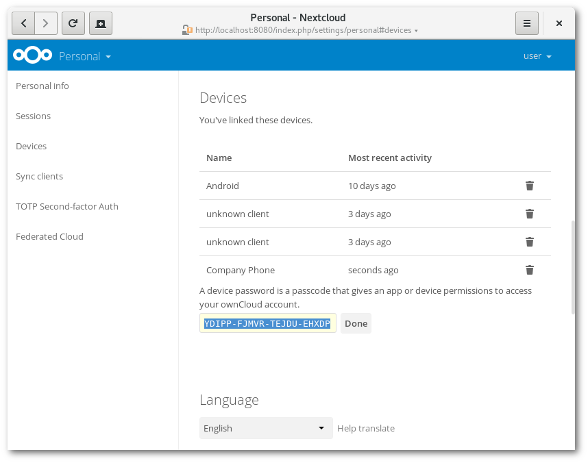

Gestionar las conexiones entre navegadores y dispositivos
La página de configuración personal le permite ver los navegadores y dispositivos que tiene conectados.
Gestionar los navegadores conectados
En la lista de navegadores conectados, pueden verse los navegadores que se han conectado a su cuenta recientemente:

Puede usar el icono de la papelera para desconectar cualquiera de los navegadores de la lista.
Gestionar dispositivos
En la lista de dispositivos conectados puede ver todos los dispositivos y clientes para los que ha generado una contraseña de dispositivo, y también su última actividad:

Puede usar el icono de la papelera para desconectar cualquiera de los dispositivos de la lista.
Al final de la lista encontrará un botón para crear una nueva contraseña para dispositivo. Puede elegir el nombre con el que se mostrará el dispositivo más adelante. La contraseña que se genera se puede utilizar para configurar el nuevo cliente. Lo ideal es generar un identificador distinto para cada dispositivo que necesita conectar a su cuenta, de tal manera que puede desconectarlos individualmente si fuera necesario:

Nota
Solo se puede ver la contraseña del dispositivo al crearla, Nextcloud no se la guardará tal cual, por lo tanto recomendamos introducir la contraseña en el nuevo cliente de inmediato.
Nota
Si está utilizando Usar la verificación en dos pasos para su cuenta, las contraseñas para dispositivos son la única manera de configurar clientes. El servidor no aceptará conexiones de clientes que utilicen la contraseña de inicio de sesión.
Contraseñas de dispositivo y cambios de contraseña
Cuando la contraseña cambia en sistemas de usuarios externos, las contraseñas de dispositivos se invalidan. Cuando el usuario inicia sesión con la nueva contraseña principal, todas las contraseñas de dispositivo se actualizan y vuelven a funcionar.